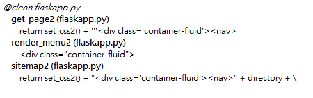
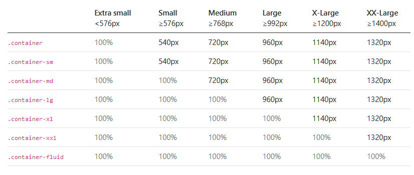

cp-syllabus <<
Previous Next >> Portable Python
cmsimde
WCM (Web based Content Management) 網際內容管理課程主要在研究改進 cmsimde 的功能與應用.
cmsimde 是一套 Web-based content management system, 也就是基於全球資訊網的內容管理系統.
由於全球資訊網頁中主要使用 html, css 與 javascript 控制網頁內容, 因此在利用 cmsimde 管理數位內容時, 必須同時對這三種語言有一定的認識.
有關 html (html5) 請參考:
HTML5 Mastery
假如要在網頁中嵌入 2D 物件, 請參考:
https://developer.mozilla.org/en-US/docs/Web/API/Canvas_API
假如要在網頁中嵌入 3D 物件, 請參考:
Beginning WebGL for HTML5
有關 css 請參考:
Modern CSS
有關 Javascript 請參考:
Beginning Javascript
為了 cmsimde 靜態頁面功能表的簡潔性, 一般建議除了 Home 之外的 H1 標題, 不要超過 9 個. 若善用各分類的 H2 與 H3 子頁面分類至多 9 個子頁面, 9x9x9 合計可以容納 729 個頁面, 應該足以涵蓋中等網站的所有內容.
https://github.com/mdecycu/cmsimde
目前的課程網站 cmsimde submodule 已經使用 mdecycu 帳號下的倉儲, 準備要將現有分別位於
get_page2, render_menu2, 以及 sitemap2 函式中, 如下圖所示:

的 class='container-fluid' 改為 class='container', 根據 bootstrap containers 頁面的說明, 能夠將現有散佈在頁面 100% 的內容, 取用各不同尺寸螢幕的局部大小:

cmsimde Template:
https://github.com/mdecycu/cmsite
cmsimde submodule update:
使用 cmsimde 作為 submodule 的倉儲, 當發現 cmsimde 倉儲內容已經更新後, 若希望使用更新後的子模組內容, 則可以利用下列指令完成:
REM 從倉儲更換目錄至 cmsimde
cd cmsimde
REM 利用 git 指令中的 pull, 從 origin 代號的網路連結, 取回 master 分支的內容, 在近端進行合併
git pull origin master
REM 回到原始倉儲目錄
cd ..
REM 利用 acp.bat 中的 git add, git commit 與 git push 將更新資料送到遠端 github 倉儲中
acp "update cmsimde submodule"
Are we living in a smart city (University, College, Department, Class, Group)?
我們生活在智慧城市 (大學, 學院, 科系, 班級, 團隊) 嗎?
Handbook of Smart Cities
cp-syllabus <<
Previous Next >> Portable Python